install.packages("ggstatsplot")
library(ggstatsplot)L8 ggstatsplot
总体均值的t检验
统计学(第8版)P163 习题8.4
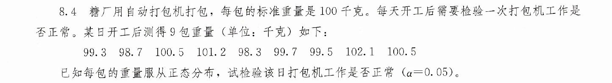
# 1. 加载所需的包
library(ggstatsplot)
# 2. 构建向量并转换为数据框（ggstatsplot 要求输入必须是 data.frame/tibble）
x <- c(99.3, 98.7, 100.5, 101.2, 98.3, 99.7, 99.5, 102.1, 100.5)
df <- data.frame(value = x)
# 3. 使用 gghistostats 进行单样本检验与绘图
p <- gghistostats(
data = df,
x = value, # 待检验的连续变量列名
test.value = 100, # 原假设设定的均值 (mu_0 = 100)
test.value.line = TRUE, # 在图中绘制参考均值虚线
test.value.color = "red", # 参考均值线的颜色
centrality.line.args = list(color = "blue", linetype = "dashed"), # 样本均值线
bin.args = list(color = "black", fill = "cyan", alpha = 0.7),
type = "parametric", # 参数检验（单样本 Student's t 检验）
normal.curve = TRUE, # 叠加理论正态分布曲线
binwidth = 0.5, # 调整直方图箱宽（适合小样本）
title = "单样本 t 检验：总体均值检验",
xlab = "观测值 (x)",
ylab = "频数"
)
# 4. 显示图表
print(p)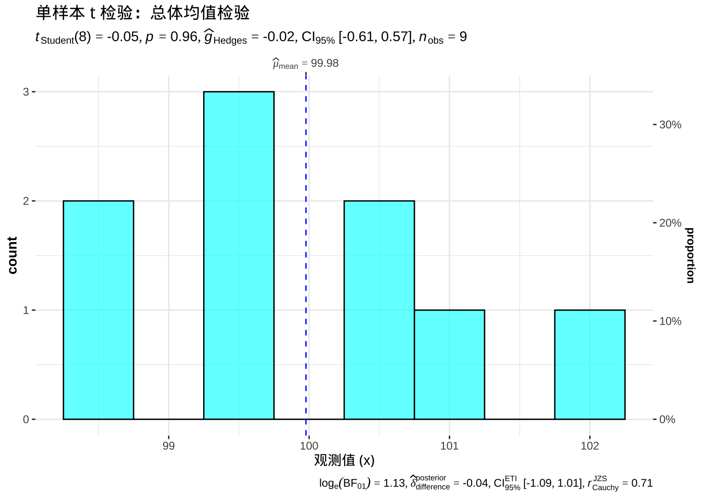
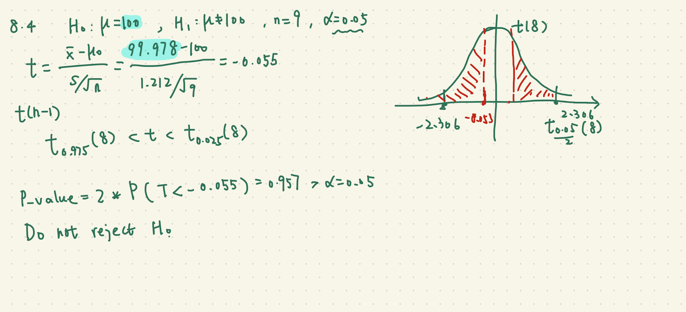
总体均值的t检验
统计学(第8版)P163 习题8.7
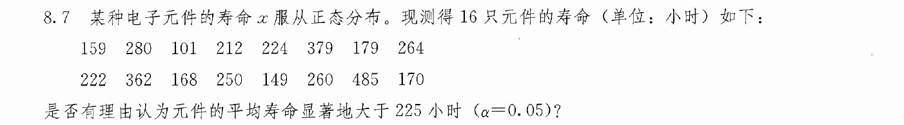
# 1. 加载所需的包
library(ggstatsplot)
library(ggplot2)
# 2. 构建向量并转换为数据框（ggstatsplot 要求输入必须是 data.frame/tibble）
x <- c(159, 280, 101, 212, 224, 379, 179, 264,
222, 362, 168, 250, 149, 260, 485, 170)
df <- data.frame(value = x)
# 3. 使用 gghistostats 进行单样本检验与绘图
p <- gghistostats(
data = df,
x = value, # 待检验的连续变量列名
test.value = 225, # 原假设设定的均值 (mu_0 = 225)
alternative = "greater", # 单尾检验，检验均值是否大于225
test.value.line = TRUE, # 在图中绘制参考均值虚线
test.value.color = "red", # 参考均值线的颜色
centrality.line.args = list(color = "blue", linetype = "dashed"), # 样本均值线
bin.args = list(color = "black", fill = "cyan", alpha = 0.7),
type = "parametric", # 参数检验（单样本 Student's t 检验）
normal.curve = TRUE, # 叠加理论正态分布曲线
binwidth = 100, # 调整直方图箱宽
title = "单样本 t 检验：总体均值检验",
xlab = "观测值 (x)",
ylab = "频数"
)
# 4. 显示图表
print(p)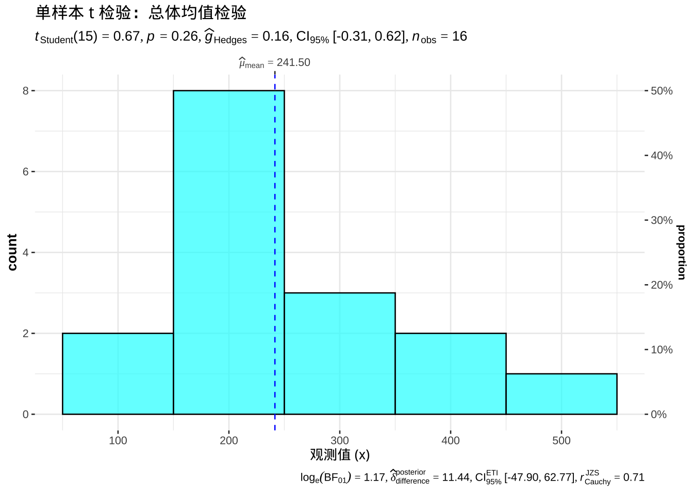
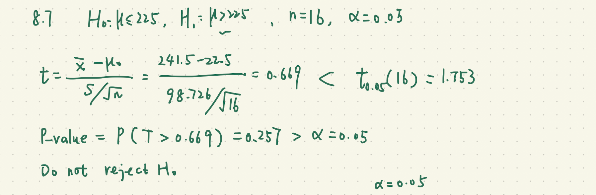
两个配对总体均值的t检验
统计学(第8版)P157 例题8.15
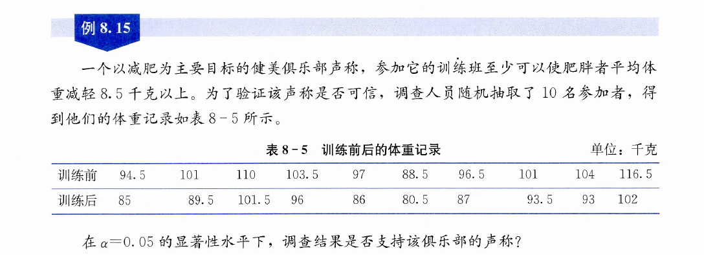
before <- c(94.5, 101, 110, 103.5, 97,
88.5, 96.5, 101, 104, 116.5)
after <- c(85, 89.5, 101.5, 96, 86,
80.5, 87, 93.5, 93, 102)
# 配对检验长数据结构
df_paired <- data.frame(
id = factor(rep(1:10, 2)), # 必须包含被试 ID
stage = factor(rep(c("训练前", "训练后"), each = 10)),
weight = c(before, after)
)
df_paired id stage weight
1 1 训练前 94.5
2 2 训练前 101.0
3 3 训练前 110.0
4 4 训练前 103.5
5 5 训练前 97.0
6 6 训练前 88.5
7 7 训练前 96.5
8 8 训练前 101.0
9 9 训练前 104.0
10 10 训练前 116.5
11 1 训练后 85.0
12 2 训练后 89.5
13 3 训练后 101.5
14 4 训练后 96.0
15 5 训练后 86.0
16 6 训练后 80.5
17 7 训练后 87.0
18 8 训练后 93.5
19 9 训练后 93.0
20 10 训练后 102.0# 真正的配对检验函数
ggwithinstats(
data = df_paired,
x = stage,
y = weight,
type = "parametric" # 配对 t 检验 (Paired t-test),差值的均值是否等于0
)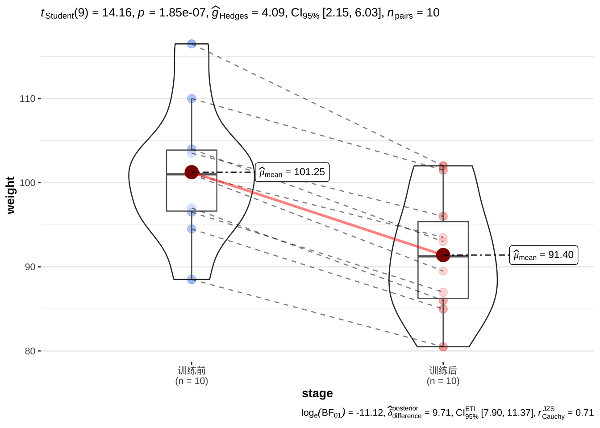
library(ggstatsplot)
library(tidyr)
# 将 after 平移 8.5，使原检验转化为针对 0 的配对检验
df_adjusted <- data.frame(
id = factor(1:10),
before = before,
after_plus_8.5 = after + 8.5
)
df_long <- pivot_longer(
df_adjusted,
cols = c("before", "after_plus_8.5"),
names_to = "stage",
values_to = "weight"
)
ggwithinstats(
data = df_long,
x = stage,
y = weight,
type = "parametric",
alternative = "less",
title = "配对 t 检验（检验差值是否显著大于 8.5）"
)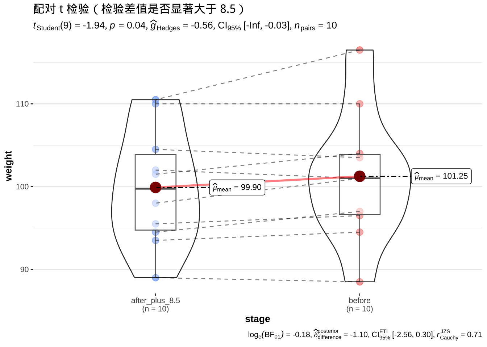
before <- c(94.5, 101, 110, 103.5, 97,
88.5, 96.5, 101, 104, 116.5)
after <- c(85, 89.5, 101.5, 96, 86,
80.5, 87, 93.5, 93, 102)
t.test(before, after, alternative = "greater",
mu = 8.5, paired = TRUE)
Paired t-test
data: before and after
t = 1.9413, df = 9, p-value = 0.04207
alternative hypothesis: true mean difference is greater than 8.5
95 percent confidence interval:
8.575214 Inf
sample estimates:
mean difference
9.85 两个独立总体均值的t检验, 两个独立总体方差的F检验
统计学(第8版)P164 习题8.10
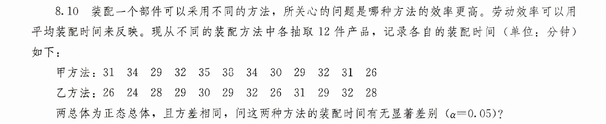
library(ggstatsplot)
# 1. 录入数据
method_A <- c(31, 34, 29, 32, 35, 38, 34, 30, 29, 32, 31, 26)
method_B <- c(26, 24, 28, 29, 30, 29, 32, 26, 31, 29, 32, 28)
# 2. 构建长数据框 (Long format)
df <- data.frame(
time = c(method_A, method_B),
method = factor(rep(c("甲方法", "乙方法"), each = 12))
)
df time method
1 31 甲方法
2 34 甲方法
3 29 甲方法
4 32 甲方法
5 35 甲方法
6 38 甲方法
7 34 甲方法
8 30 甲方法
9 29 甲方法
10 32 甲方法
11 31 甲方法
12 26 甲方法
13 26 乙方法
14 24 乙方法
15 28 乙方法
16 29 乙方法
17 30 乙方法
18 29 乙方法
19 32 乙方法
20 26 乙方法
21 31 乙方法
22 29 乙方法
23 32 乙方法
24 28 乙方法# 3. 使用 ggbetweenstats 执行独立两样本 t 检验与绘图
p <- ggbetweenstats(
data = df,
x = method, # 分组变量
y = time, # 连续数值变量（装配时间）
type = "parametric", # 参数检验 (Student's t-test)
var.equal = TRUE, # 题设已知方差相同，等方差 t 检验
pairwise.comparisons = TRUE, # 显示组间两两比较
title = "两种装配方法的平均装配时间差异检验",
xlab = "装配方法",
ylab = "装配时间 (分钟)"
)
# 4. 打印图表
print(p)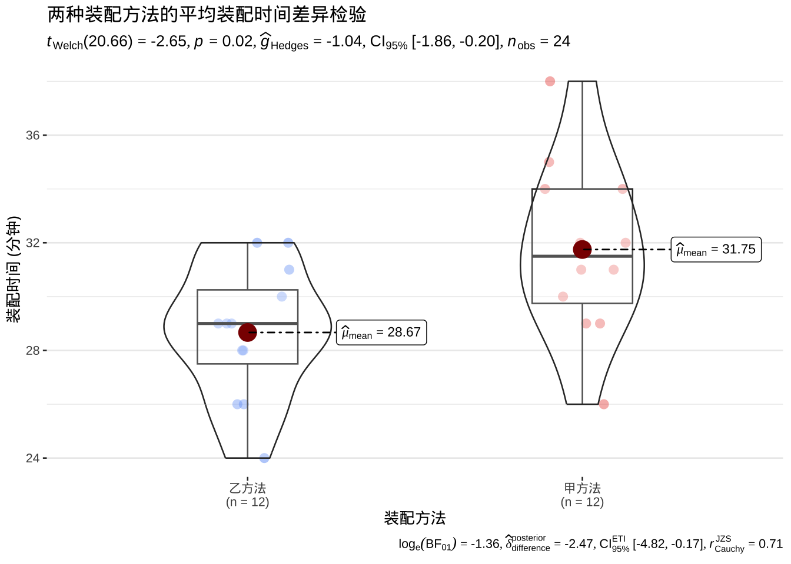
- 两种方法的装配时长的方差是否相等？显著性水平为0.05.
甲 <- c(31, 34, 29, 32, 35, 38,
34, 30, 29, 32, 31, 26)
乙 <- c(26, 24, 28, 29, 30, 29,
32, 26, 31, 29, 32, 28)
var.test(甲,乙)
F test to compare two variances
data: 甲 and 乙
F = 1.6838, num df = 11, denom df = 11, p-value = 0.4009
alternative hypothesis: true ratio of variances is not equal to 1
95 percent confidence interval:
0.4847138 5.8488408
sample estimates:
ratio of variances
1.68375 P值等于0.4，在0.05的显著性水平下，不拒绝“方差相等的原假设”
- 能否认为甲方法装配时长的均值显著高于乙方法装配时长的均值？显著性水平为0.05.
方差相等的t检验
t.test(甲,乙, alternative = "greater",
var.equal = TRUE)
Two Sample t-test
data: 甲 and 乙
t = 2.6484, df = 22, p-value = 0.007339
alternative hypothesis: true difference in means is greater than 0
95 percent confidence interval:
1.084184 Inf
sample estimates:
mean of x mean of y
31.75000 28.66667 P值等于0.007，在0.05的显著性水平下，拒绝“miu_甲<=miu_乙”的原假设。
认为甲方法装配时长的均值显著高于乙方法装配时长的均值